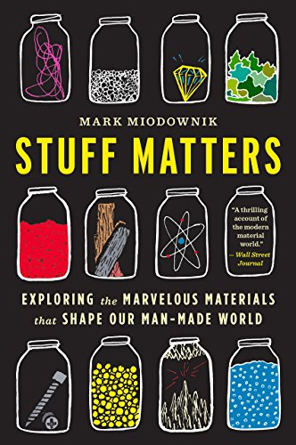
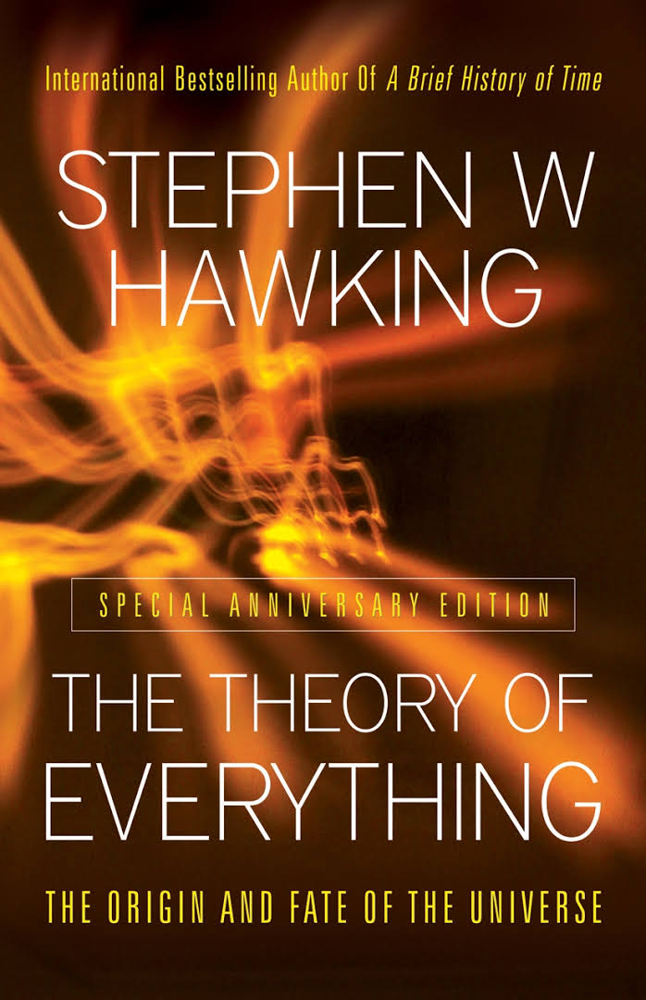
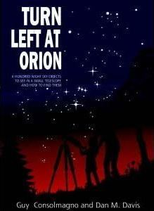
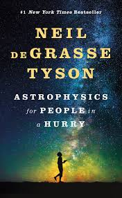
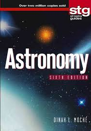
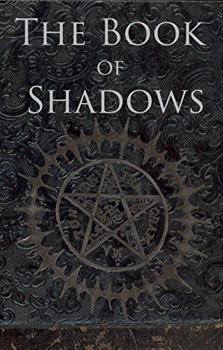
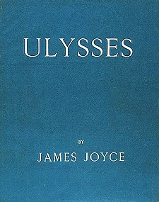
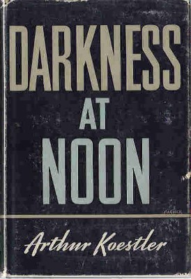

Here we sell special books, which you will never find anywhere else.
Here you will find all kinds of books like dark magic, novels, scientific...etc.
So, what are you waiting for? buy everything while you can because the stock ai' really limited.
Select one of the categories on the left to start browsering.
Th Boy Scientist
Science has never been so much fun! The Boy Scientist offers all the vintage appeal of Popular Mechanics's popular Boy Mechanic series combined with daring adventures in the laboratory. Taken from the turn-of-the-twentieth-century issues
of Popular Mechanics magazine, these 160 experiments-based on chemistry, math, and physics-carry on the Popular Mechanics's tradition of making science engaging and entertaining. And even though technology has changed, and our knowledge of
how things work has grown, the underlying scientific principles behind these activities remain sound.
15$

Stuff Matters
SuperSummary, a modern alternative to SparkNotes and CliffsNotes, offers high-quality study guides that feature detailed chapter summaries and analysis of major themes, characters, quotes, and essay topics. This one-page guide includes a
plot summary and brief analysis of Stuff Matters by Mark Miodownik.
10$
The Death And Life of A Great Lake
The Death and Life of the Great Lakes by Dan Egan is a non-fiction history of the Great Lakes, and how the influence of man-made innovations over the course of centuries has led to an ecological disaster that will impact generations to
come. Egan, a journalist based in Milwaukee, writes extensively on the ways that technology and the desire of man to control nature have led to an influx of invasive species, unbalanced ecosystems, pollution, and other disastrous problems
for humans and animals living in the northern Midwest.
15$
Soul Mind Body Science System
What is a soul? Are miracles real? When the soul is healed, how does the body respond?
Throughout history,unexplainable by modern scie nce. Dr. Sha has personally healed thousands of patients, usually in front of dozens of witnesses. Hundreds of videos of these healings can seen on YouTube. But how can these healings be
explained?
Soul Mind Body Science System is the first book to explore the scientific explanations for why soul healing miracles are genuine. Written with Dr. Rulin Xiu, an expert on string theory and quantum physics who trained at The University of
California Berkeley, Dr. Sha shares, for the first time, the scientific theories that explain why all actions on Earth are guided by the reality of the soul.
15$
Einstein's Theory of Relativity (Classic Reprint)
Excerpt from Einstein's Theory of Relativity
Of the other books which I have used I should like to quote, above all, Ernst Mach's classical Mechanics (which has appeared in English), and then the very lucidly written volume by E. T. Whittaker, A History of the Theories of Aether and
Electricity (london, Longmans, Green Co., and the comprehensive account of the Theory of Relativity given by Hermann Weyl in his Space, Time, Matter (english translation published by Messrs. Methuen 81: Co., Ltd., Anyone who wishes to
penetrate further into Einstein's doctrines must study the latter work. It is impossible to enumerate the countless books and essays from which I have drawn more or less directly.
15$

The Theory Of Everything
Stephen Hawking is widely believed to be one of the world’s greatest minds: It would be like hearing Christopher Columbus on the New World. Hawking presents a series of seven lec-tures—covering everything from big bang to black holes to
string theory.
13$
A Brief History of Time
A Brief History of Time: From the Big Bang to Black Holes is a popular-science book on cosmology by British physicist Stephen Hawking. It was first published in 1988. Hawking wrote the book for nonspecialist readers with no prior knowledge
of scientific theories. Wikipedia
Publisher: Bantam Books
Originally published: March 1, 1988
Author: Stephen Hawking
8$

Turn left at Orion
A guidebook for beginning amateur astronomers, Turn Left at Orion provides all the information you need to observe the Moon, the planets and a whole host of celestial objects
Originally published: 1989
Author:Guy Consolmagno
Genre: Reference work
10$

Astrophysics for People in a Hurry
Astrophysics for People in a Hurry is a 2017 popular science book by Neil deGrasse Tyson, centering around a number of basic questions about the universe.
Originally published: May 2, 2017
Author: Neil deGrasse Tyson
Genre: Non-fiction
15$

Astronomy: A Self-Teaching Guide
For a generation, Astronomy: A Self-Teaching Guide has introduced hundreds of thousands of readers worldwide to the night sky. Now this classic beginner's guide has been completely revised to bring it up to date with the latest
discoveries
Originally published: August 4, 1993
Author: Dinah L. Moché
7$
Black Arts : An Absorbing Account of Witchcraft
The Book of Smokeless Fire By S. Ben Qayin "The work that is being presented in "The Book of Smokeless Fire" is based on a very little known and overlooked Solomonic text simply known as "Miscelaneo de Salomon," which amazingly mirrors
that of Lovecraft's, "Necronomicon" both in content and history. It is an ancient and forbidden Arabian manuscript, that seems was later evolved into the Greek "Goetia" and gives the earliest known account of King Solomon and his binding of
the seventy-two sinister Djinn he sealed away in the infamous brass container.
320$
At Satan's Altar : A Collection of Prayers
Marie RavenSoul, a disciple of the Devil for more than 30 years, presents the reader with a fascinating collection of her personal and heartfelt devotionals to the Lord of Darkness. Those who have been searching for a serious and
practical guide to religious rites in honour of Satan will find what they seek in this volume. Written with the explicit religious worship of the Devil in mind, At Satan's Altar provides a wealth of liturgical material to aid both the
novice practitioner and the seasoned Satanist alike. Whether your path is a solitary one or you are looking for something to add to your Coven's rituals, this book will not disappoint.
320$
Book of Satanic Magic
The Book of Satanic Magic contains powerful Rites, Rituals, Conjurations, Spells and Invocations used by those who worship Satan. This book also contains the Theology of Darkness of the Left Hand Path and Demonic Invocations.
20$
The Satanic Rituals
(full book description) University Books, Inc., Secaucus, NJ, 1972. 1st Edition 1st Printing, Fine/VG, Hard Cover, DJ With MYLAR. Size=6.5"x9.5", 220pgs. 1/2" and 1/4" DJ tear top rear edge, 1/8" x 1/4" chip and 1/4" DJ tear rear
fore-edge corner, DJ nicked, slightly worn at edges, o.w. clean, bright and tight. No ink names, bookplates, etc. Price unclipped. RARE First Edition of this Satanic classic. [Satanism: Occult: First Editions: Race Books: Satanic Worship:
Black Mass: Satanic Baptisms: Devil Worship].
620.74$

The Book of Shadows: Red White and Black Magic Spells
I compiled this Book of Shadows from a collection of spells I have been using since I started down my path. This book contains over 100 spells and a list of runes and how they can be used in spell casting and even crafting your own
spells. I've collected these spells from several different sources, mostly from witches I have met in my travels and covens I have been a part of.
13.50$

Ulysses
Written as an homage to Homer’s epic poem The Odyssey, Ulysses follows its hero, Leopold Bloom, through the streets of Dublin. Overflowing with puns, references to classical literature, and stream-of-consciousness writing, this is a
complex, multilayered novel about one day in the life of an ordinary man. Initially banned in the United States but overturned by a legal challenge by Random House’s Bennett Cerf, Ulysses was called “a memorable catastrophe” (Virginia
Woolf), “a book to which we are all indebted” (T. S. Eliot), and “the most faithful X-ray ever taken of the ordinary human consciousness” (Edmund Wilson). Joyce himself said, “There is not one single serious line in [Ulysses].
11.01$
The Great Gatsby
Set in the Jazz Age, The Great Gatsby tells the story of the mysterious millionaire Jay Gatsby, his decadent parties, and his love for the alluring Daisy Buchanan. Dismissed as “no more than a glorified anecdote, and not too probable at
that” (The Chicago Tribune), The Great Gatsby is now considered a contender for “the Great American Novel.” Fitzgerald wanted to title the novel “Trimalchio in West Egg,” but both his wife and his editor preferred “The Great Gatsby.”
Fitzgerald gave in, though he still thought that “the title is only fair, rather bad than good.”
14$
Brave New World
Though Brave New World is less famous than George Orwell’s 1984, it arguably presents a world that more closely resembles our own: a world of easy sex, readily available and mood-altering pharmaceuticals, information overload, and mass
production. Juxtaposing Orwell’s and Huxley’s dystopias, the critic Neil Postman commented: “What Orwell feared were those who would ban books. What Huxley feared was that there would be no reason to ban a book, for there would be no one
who wanted to read one. . . . Orwell feared that the truth would be concealed from us. Huxley feared the truth would be drowned in a sea of irrelevance.”
20$

Darkness at Noon
Set in the midst of Stalin’s 1936–1938 purges—when Stalin executed as many as 1.75 million peasants, government officials, and Communist party members—Darkness at Noon is the story of a man named Rubashov, who is arrested in the middle
of the night by the state’s secret police. The Party he has long served tortures him and demands he confess to crimes they know he has not committed. Darkness at Noon sold over 400,000 copies when it was published and its portrait of
Communism was a major factor in the Communist Party’s defeat in France.
10.74$
Nineteen Eighty-Four
The most famous dystopian novel of all time, 1984 is the story of Winston Smith as he struggles to survive in the sinister world of Big Brother. This novel has so defined the twentieth century that many terms from it—Big Brother,
doublethink, thought police—have seeped into popular culture. When it was first published in 1949, the novelist V. S. Pritchett commented: “I do not think I have ever read a novel more frightening and depressing; and yet, such are the
originality, the suspense.